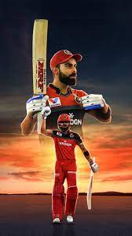

VIRAT KOHILI

Virat Kohli is an Indian cricketer who plays for India national cricket team. He was born in Delhi, India on November 5, 1988.
Virat is the first player in ICC cricket history to win all 3 ICC awards in a single year- ICC ODI player of the year, ICC Test player
of the year and ICC Player of the year award in 2018. He is rated as one of the best batsmen in the world
Virat Kohli first came into the limelight in 2008, when he led the Indian U-19 cricket team to victory in 2008 U-19 Cricket World Cup,
He soon made his debut for the Indian team in August 2008. during a ODI match against in Sri Lanka. Virat also became one of the valuable
Indian captain in Test cricket with 27 test wins, 12 overseas test wins and highest winning percentage as captain in both Tests and ODIs.
Kohli was ranked eighth in ESPN's list of world's most famous sportspeople in 2016. Virat is the only current player to have a stand named
after him in Delhi Firoz Shah Kotla stadium to honour his immaculate contributions to Indian cricket.
He started dating Bollywood actress Anushka Sharma in 2013. They got married on 11 December 2017 in Florence, Italy.
The couple had their first child, a daughter in January 2021